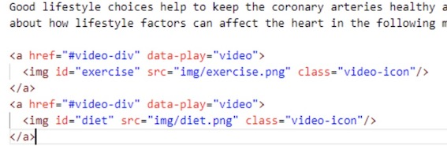

7. What are the attributes starting with “data-” in html tags in markdown files?¶
These are data attributes that can be defined for html tags in order to store some extra information with the associated html tag.
The data-play=video added to <a> tag instructs to load the video player at the right hand side panel. Similarly, it is important to add #video-div in href attribute of the same <a> tag, as this is helpful to scroll to the appropriate place in small devices, while playing video. The key/name of the video(as defined in videos.json) is specified as the id of <img> tag of video icon.
